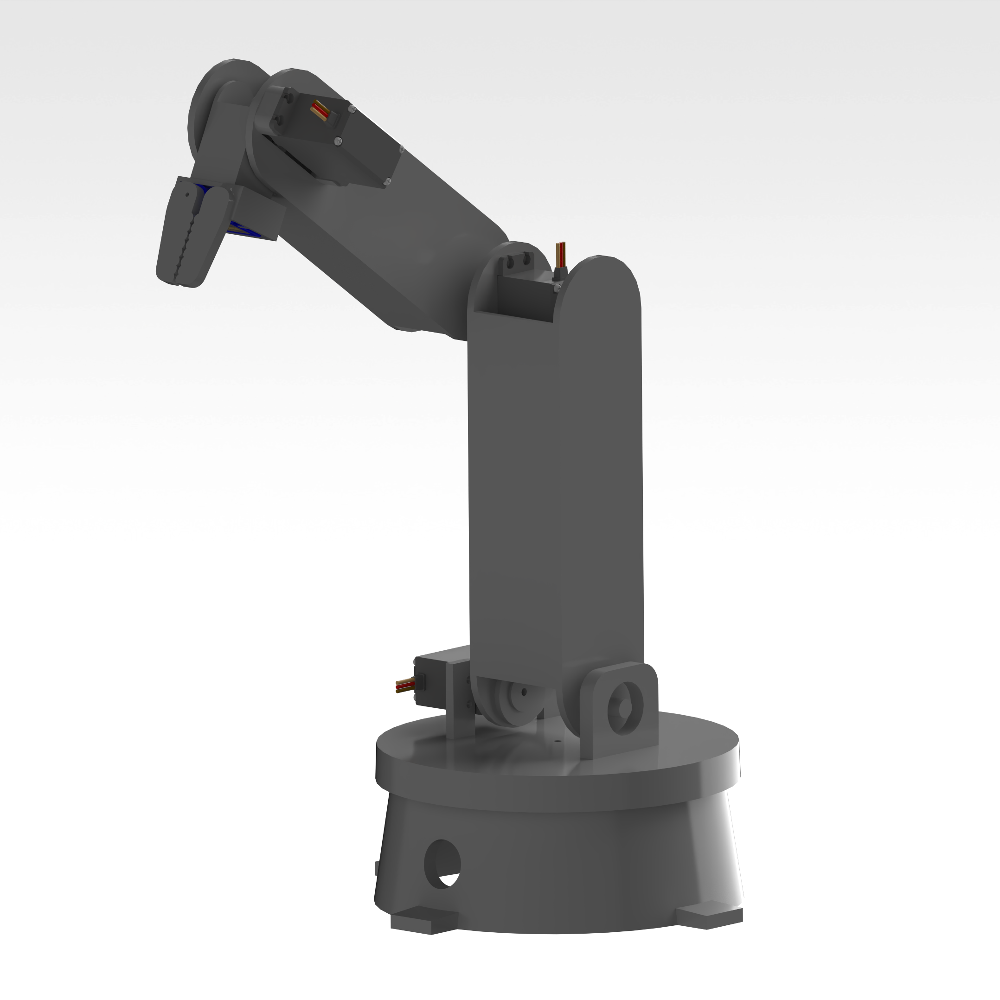
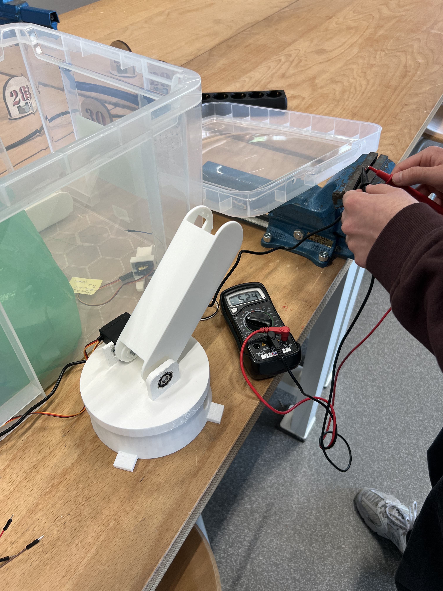
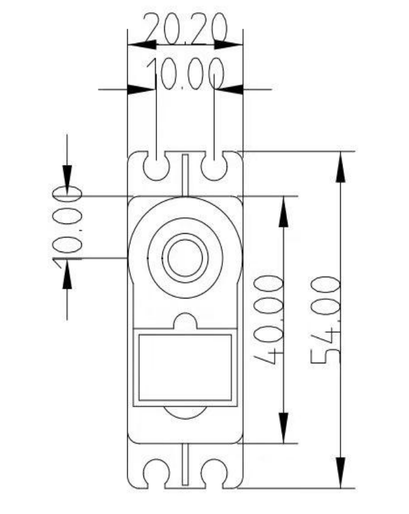
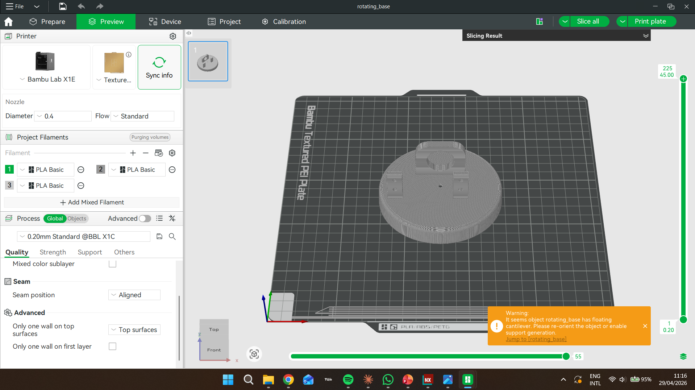
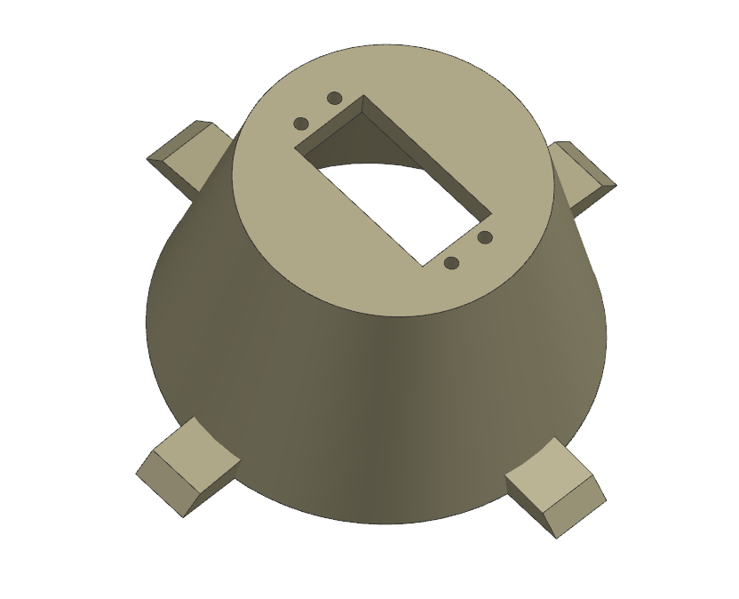
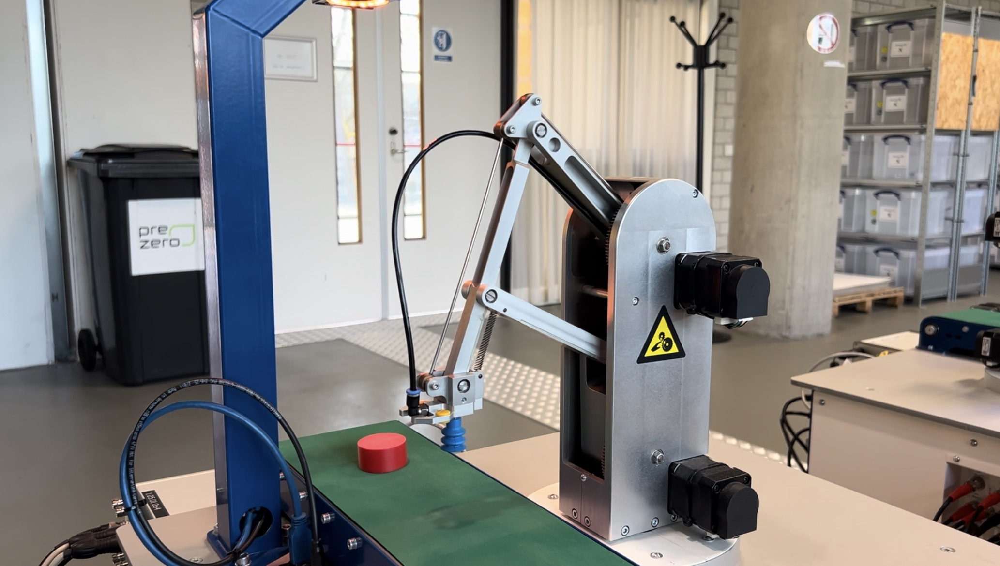
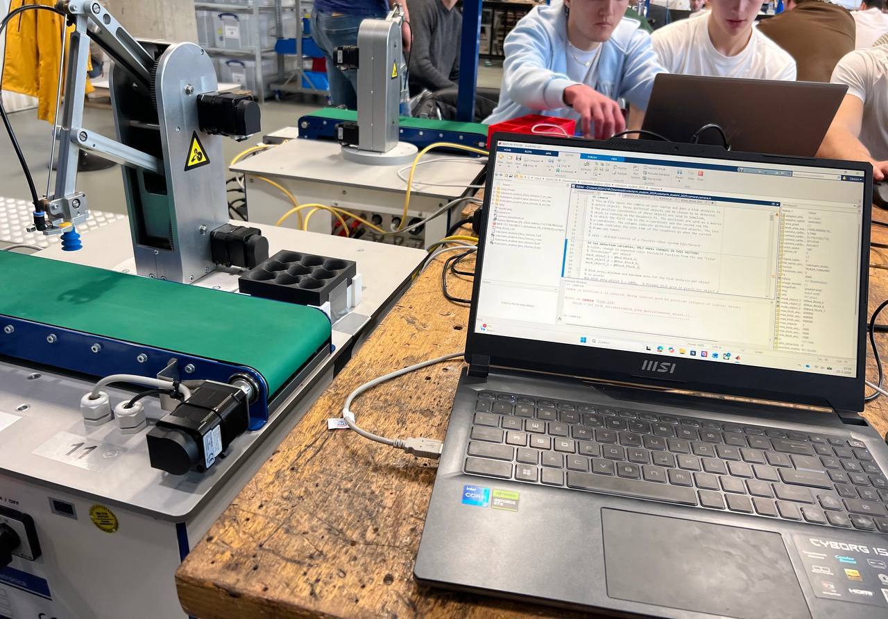

Third-year Mechanical Engineering student at TU/e with a passion for design, prototyping, and solving real-world problems through thoughtful engineering.
I am currently pursuing a degree in Mechanical Engineering at TU/e. I always wanted to know how things work and how they can be made better. I like working on dynamics and control related problems, or sketching a prototype for a new project. I always try to keep an open mind and be creative when I am working on something.
Outside of class I like to work on projects that I am really interested in. I also like to stay active and spend time with my friends. We like to play sports like squash or go to the gym.
I’m always looking for ways to apply what I have learned. Now I am looking for internship opportunities and projects that I can work on with other people. I want to use my skills and learn more about being a good engineer.
Technical Skills
Designed and 3d printed a 4-degree-of-freedom robotic arm in Siemens NX, focusing on kinematic analysis and workspace optimization. Implemented inverse kinematics to enable precise end-effector positioning.
See more ↗Developed a MATLAB/Simulink control system for a robot arm with conveyor belt and camera-based object detection. Implemented feedback/feedforward control across 3 axes, tuned via FRF measurements, to pick objects off a moving conveyor and place them at target coordinates.
See more ↗Built a MATLAB model to simulate counter-flow heat exchanger performance under varying flow rates and temperatures. Compared ε-NTU and LMTD methods, producing charts for design selection at different operating conditions.
View Code ↗A first-year design project applying DFM principles. Modelled in SolidWorks, manufactured using laser cutting and hand assembly. Focused on parametric design, allowing the model to be resized by changing a single variable.
View Drawings ↗Simulated damped pendulum dynamics in MATLAB, comparing small-angle approximations to full nonlinear solutions. Animated the motion and explored how drag coefficient affects energy dissipation over time.
View Simulation ↗Group project to design a two-finger pneumatic gripper for handling irregular objects. Contributed mechanical linkage design and GD&T drawings. The prototype achieved reliable grip across 5 different test geometries.
View Poster ↗I'm open to internships, part-time roles, and collaborative engineering projects. Feel free to reach out — I'd love to connect.
A 4-degree-of-freedom robotic arm designed and 3D printed in Siemens NX, focusing on kinematic analysis and workspace optimization.
The idea came to mind as a next step after the course Control of a flexible robot system. I enjoyed controlling the robot so much, that I decided I wanted to work on all parts of it myself. Since there was no opportunity for me to do that in the University, I made my own robotic arm.
I started my design by researching how other people tackled this problem. After finding a couple of online resources, I was confident I could begin sketching a few prototype ideas. Moving through the design process, I eventually had a few parts ready for printing in Siemens NX.
Of course, there were multiple iterations and refinements along the way. This robot is still being continuusly improved, helping me learn how to transfer the theories I learned in my classes, into a real working robot.





A control engineering project centered on a flexible robot arm system with a conveyor belt and camera-based vision, using MATLAB/Simulink to design and tune motion controllers for automated pick-and-place tasks.
This project was part of the Control of a Flexible Robot System course, where our team of about 5 students was given a real robot arm setup with a conveyor belt and camera system, and had to take it through a full control design cycle ourselves — from modeling to feedback design to final performance testing.
My main focus within the team was on the controller design and building out the Stateflow logic from scratch, since the pick-and-place sequence needed to reliably coordinate the robot's motion, the vacuum gripper, and the camera detection without any of it clashing. I spent a lot of time in Simulink tuning the feedback and feedforward controllers using FRF measurements, then iterating on the Stateflow chart to handle the different states of the task cleanly.
It was a good opportunity to take control theory from lectures and actually see it work on hardware, dealing with real delays, noise, and timing issues that don't show up in a simulation. By the end, we had the robot reliably picking objects off the moving conveyor and placing them at target coordinates.


A MATLAB model simulating counter-flow heat exchanger performance, comparing the ε-NTU and LMTD design methods across a range of operating conditions.
Written for the Thermodynamics module, this model takes user-defined inlet temperatures, flow rates, and fluid properties, then calculates outlet temperatures and heat transfer rate using both the Log Mean Temperature Difference (LMTD) and effectiveness-NTU (ε-NTU) methods.
The script sweeps across a range of NTU values (0.1 to 5) and plots effectiveness curves for counter-flow and parallel-flow configurations on the same axes — making the performance advantage of counter-flow immediately visible.
A secondary parametric study varied the hot-side flow rate from 0.01 to 0.2 kg/s and tracked how outlet temperature and effectiveness changed, producing a surface plot useful for design selection.
A first-year design project applying Design for Manufacture principles, produced in SolidWorks and fabricated from laser-cut sheet material using a fully parametric model.
The brief was to design a functional desktop object that could be manufactured from flat sheet stock and assembled without adhesives or fasteners — relying only on press-fit joinery.
I chose a modular desk organiser with interlocking slot joints. The key design constraint was parametric control: every slot, tab, and panel dimension is driven by two master variables — material thickness and grid pitch — so the whole model updates correctly when either changes.
The final version was cut from 3 mm MDF on the university laser cutter. Assembly took under five minutes with no tools. A follow-up iteration explored 4 mm birch plywood, which improved rigidity noticeably.
A MATLAB simulation comparing small-angle and full nonlinear pendulum dynamics, with animated motion and a study of how drag coefficient affects energy dissipation.
This simulation was built as a self-directed extension of the Engineering Dynamics module. The goal was to explore where the small-angle approximation (sin θ ≈ θ) breaks down and how drag changes the system's behaviour.
Using MATLAB's ode45 solver, I integrated the full nonlinear equation of motion for a damped pendulum across a range of initial angles (5° to 60°) and drag coefficients. The results are plotted as phase portraits and time-series overlays between the linear and nonlinear models.
An animation was added using MATLAB's built-in animation loop, showing the pendulum bob in real time alongside the live energy plot. At initial angles above ~20°, the approximation error becomes clearly visible.
A group project to design a two-finger pneumatic gripper for handling irregular objects, achieving reliable grip across five test geometries through careful mechanical linkage design.
The team of four was tasked with designing a gripper capable of picking and placing objects of irregular geometry — a cylinder, a hex bolt, a foam cube, a PET bottle, and a flat disc. The constraint was a single-acting pneumatic actuator at 4 bar supply pressure.
My contribution was the mechanical linkage connecting the actuator piston to the two finger bodies. I designed a symmetric toggle mechanism that converts the linear actuator stroke into a parallel jaw motion, maintaining even grip force regardless of object width within a 15–60 mm range.
I also produced the full GD&T drawing set for the finger bodies and pivot pins, specifying tolerances to ensure consistent assembly and repeatable grip force. The prototype was machined from aluminium and assembled in the university workshop.